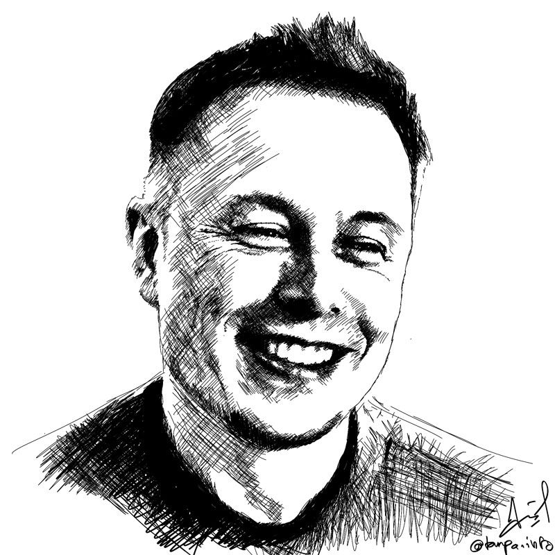

Elon Musk

A sketch of Elon Musk.
- June 28, 1971 : Elon Musk was born in Pretoria, South Africa.
- 1981 : Elon Musk started becoming interested in computing with the Commodore VIC-20 and even taught himself computer programming.
- 1983 : By age 12, Elon Musk sold his first ever game "Blastar" to a magazine that was called PC and Office Technology for $500.
- 1992 : Elon Musk studied Business and Physics at the University of Pennsylvania graduating with an undergraduate degree in economics and was able to stay for a second bachelor's degree in studying physics.
- 1995 : Elon Musk started an internet city guide web software company Zip2 with his brother Kimbal.
- February 1999 : Zip2 was sold to Compaq for $307 million USD.
- March 1999 : Elon Musk cofounded X.com with $10 million coming from the sale of Zip2
- 2000 : X.com merged with Confinity in order to form PayPal. Elon Musk married his first wife Justine Wilson whom he met at Ontario's Queen's University. Elon Musk lost his infant son Nevada Alexander Musk at 10 weeks old.
- May 2002 : Elon Musk founded SpaceX with $100 million USD of his own project becoming CEO and CTO.
- October 2002 : eBay bought PayPal for $1.5 billion USD. Elon Musk got $165 million.
- 2006 : Elon Musk provided the financial capital and concept for SolarCity which were founded by his cousins Pete Rive and Lyndon.SpaceX started to get various contracts from NASA to send cargo and astronauts to the ISS.
- 2007 : Elon Musk became CEO and product architect of Tesla.
- 2012 : SolarCity and Tesla collaboration for better electric vehicle batteries.
- 2013 : SolarCity became the world's second largest solar power provider.
- August 12, 2013 : Elon Musk revealed his concept for hush-speed transportation through reduced-pressure tubes.
- 2014 : Elon Musk announced open-sourcing Tesla technology allowing anyone to use them.
- June 17, 2014 : SolarCity advanced production facility to be built in Buffalo, New York. Completed in 2017.
- 2015 : Held Hyperloop design competition.
- December 2015 : Elon Musk announced the creation of OpenAI.
- 2016 : Elon Musk started dating Amber Heard (aquaman). SolarCity was acquired by Tesla. Neuralink was co-founded by Musk. Musk owned 54% of SpaceX stocks giving him 78% voting shares.
- September 2016 : Elon Musk revealed plans of colonizing Mars.
- May 12, 2017 : The Hyperloop test run began in Nevada.
- 2018 : Elon Musk left OpenAI to avoid possible conflicts as Tesla CEO
- October 2018 : The Musk Foundation donated over $480,000 to help install water fountains with filtration systems at all Flint, Michigan schools. Filed for an "intent to use" TM application for Teslaquila.
- January 2019 : Elon Musk went to China for the groundbreaking of the new Tesla Gigafactory Shanghai.